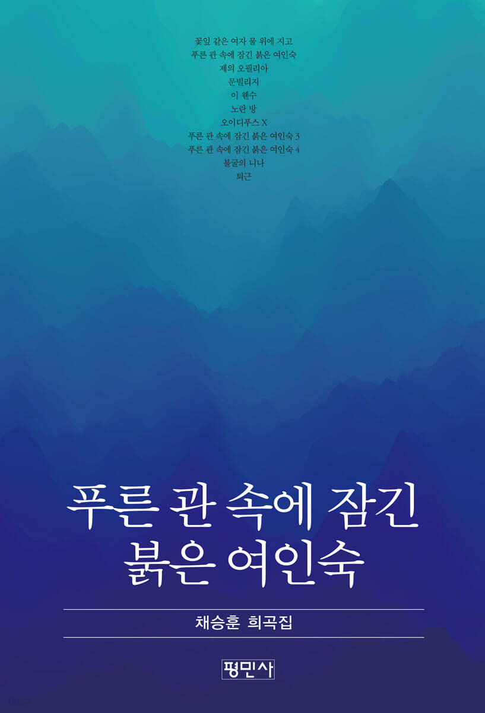

Stage script
푸른 관 속에 잠긴 붉은 여인숙

About the book
책 소개
연극연출가 채승훈의 희곡집으로 열한 작품이 실려 있다. 여기 수록한 대본들은 대부분 기존의 희곡 형식과는 다른 경향의 작품들이다. 대사가 없이 연출 지시문으로만 구성된 작품들도 있고, 대사가 있더라도 기존의 형식적 틀과는 거리가 있다. 세계적인 고전들을 재해석하거나 재구성한 작품도 있다.
그런 다양한 형식의 작품들을 창작 연대순으로 배열하다 보니 한편으론 일관성이 없어 보이기도 한다. 그럼에도 연대순 배열을 택한 것은, 그때마다의 작품 선택을 그대로 존중하기 위해서다.
Table of contents
목차
- 꽃잎 같은 여자 물 위에 지고9
- 푸른 관 속에 잠긴 붉은 여인숙31
- 제의 오필리아39
- 문빌리지49
- 이 웬수103
- 노란 방169
- 오이디푸스 X213
- 푸른 관 속에 잠긴 붉은 여인숙 3235
- 푸른 관 속에 잠긴 붉은 여인숙 4247
- 불굴의 니나259
- 퇴근301
외부 사이트로 이동합니다 · 출처 예스24